COURSE NAME
Block Chain & BitCoin
Distributed Transaction Ledger

Introduction
BitCoin was the solution was proposed by Satoshi Nakamoto to the problem creating a purely electronic money and of recording transactions between two untrusted parties without a trusted middleman - for example a trusted financial organization. The key ideas are:
- Minimal information has to be shared between the parties
- All transaction are recorded is a distributed ledger
- The ledger is tamperproof
- Cryptographic principle are used to protect the the authenticity and nonrepudiation of the individual transactions with prevention of double-spending.
- Hashing & distributed ledger is used to maintain the integrity of the ledger
- Mining/proof-of-work is used to timestamp and validate the ledger
- Reward for mining/proof-of-work is new BitCoins for successful mining activity
The BitCoin paper was published Oct 2008, by Satoshi Nakamoto, a pen name for the author or a group of author. The real identity of the author or authors is unknown.
As the rest of the paper will show that BitCoin and its underlying blockchain technology is an incredible achievement of computing science, economics and social science.
BitCoin overview
The entire idea of BitCoin and the associated BlockChain technology was published in Oct 2008 by an unknown author or authors under the pseudonym of Satoshi Nakamoto. It is a short 8 page document that describes the entire system.
Bitcoin is a practical solution to a complex problem in computing and economics - the exchange of resources between parties without a centralized trusted arbitrator. Stated in other terms how do you manage the transfer from one party to another there the resources is electronic data. For example, John can send a music file to Kate; now Kate has the music, but John has not lost the music file. John can send another copy of the same music file to Ken, thus John has not lost ownership of the music. This is known as the double spend problem.
The traditional solution to this problem is to use a centrally trusted authority that records that the transaction happened, the order the transactions happen and to uniquely identify the resource being transferred. The problem with a central trusted authority is exactly that, the authority must be trusted to reliably hold the data forever. That central authority could fail in many ways and represents a significant risk over long periods of time.
Until the invention of Bitcoin and its underlying blockchain, non-central recording of transaction that prevents double spending was an unsolved problem. Further, mathematicians and computer scientist had shown that there was no ‘perfect’ solution to this problem. What Nakamoto in his paper shows is that even though there is no perfect solution, by combining economic/market forces and cryptography distributed transaction capture the risk of double spend can be made vanishingly small. The brilliance of the solution is that it does not assume that the transacting parties are all trustworthy only that they behave mostly in their self interest.
Key Ideas
The following are the key ideas behind Bitcoin, are and blockchain
- Resources are Bitcoins or partial Bitcoins
- The primary Bitcoin transaction is the transfer of resource from its owner to another party
- A party is identified by an address, where an address is the fixed length hash of the public key
- A party can own any number of addresses
- A party owns an address if that party know private key of the address
- All transactions (transfer of resources) signed by the owner of resource using the private key
- Transactions are grouped into a block and added to the blockchain
- Blockchain consist of a time ordered chain of blocks
- Blockchain is the distributed record of transaction (history)
- Blockchain hold the immutable history of all transactions
- Distributed consensus on what is the current ‘honest’ blockchain
- Ownership of resources determined from transaction history
- Bitcoin network consist of a collection of Nodes
- Nodes hold all or part of the blockchain
- Blocks are added to the blockchain by a ‘bitcoin miner’
- The reward for adding a block to the blockchain are some Bitcoins
- A miner eligible to add to the blockchain is randomly selected
- In order to be selected a miner must show ‘proof of work’
Key Technical Ideas
- PKI to secure transactions (transactions signed by owner)
- Public ledger of all transactions in historical order, freely available to all and tamper proof
- A transaction is pending until it is incorporated into the ledger
- Each ledger entry is a block of pending transaction
- Network and timing issues are resolved by incorporating the longest of blocks into the ledger
- The older the block in the history the greater the confidence that the block is confirmed
- History secured through ‘proof-of-work’ (Hashcash) and consensus
- Paid for performing ‘proof-of-work’ and validation on a block of transactions
- Proof of work only valid, if all signatures and ownerships are verified
- Proof of work performed by ‘miners’ and paid in BitCoin for doing the work
- Multiple miners perform ‘proof of work’, winner takes the prize
- Incentive for other miners to verify the ‘proof of work’ and validation. If any discrepancy is found the proof is invalidated by consensus and the work on that block continues until a valid winner is agreed.
- Other miners agree to a block, they start working on the next block treating the approved block as the head of the blockchain
- If a miner does not approve it can keep working on the next block based on the previous head block
- Agreement on current ledger by consensus, if more than one miner presents proof of work the longest chain wins. This resolves timing issue, since there is a disincentive to work on a shorter chain.
- If there are more than one chain, the smart strategy is to work on the longest valid chain. Therefore the longest chain wins.
- A miner only gets rewarded if their block becomes a part of the longest chain
- Built-in disincentive for rogue miners
- Only thing a rogue miner can try to do is to ‘double spend’ their or a collaborator's Bitcoin
- Rogue miner must be able to perform more ‘proof-of-work’ than all the honest miners combined
- Performing honest mining pays far greater than dishonesty can earn
Ownership and Transfer of ownership
- How we identify the actors/players
- Public key of a public/private key pair (see PKI)
- How it gets started
- How the first coins come into existence
- How do they get distributed
- How ownership changes
Blockchain miner
The job of a miner is to perform the following:
- Verify that all the transactions are honest
- The owner of the resource actually owns the resource
- There is no double spend - a resource owner transferring the same resource more than once
- Best effort is made to keep transactions in chronological order - fairness principle
- All pending transactions are added to a block in a finite time
- A transaction is only added once to the blockchain
- Prevent dishonest miner(s) from adding invalid transactions into the blockchain
- Reward the miner who get the chance to verify and add a block to the blockchain with some Bitcoins (currently stands at 25 bitcoins)
- A miner has a fair chance to add to the blockchain. This should be like a lotto, the more tickets your chances increase, but as long as you have a ticket you still have a chance.
- Blocks should be added at a steady rate, for bitcoin once every 10 minutes
It is not possible to meet all those requirements perfectly when there is no central coordination. But over a short period of time the probability for meeting the above requirements should be certainty for all practical purposes. in the same way there is no way to guarantee that if you toss a fair coin and get heads the first time, the next time you toss a coin you will get tails, but over a series of coin tosses the number of heads to tails should be nearly identical.
Proof of work
Introduction
Miners are key to the Bitcoin/blockchain integrity, consensus and block chain management. Proof of work solves the following requirements for extending a block in the blockchain:
- Randomly select
Bitcoin Anonymity
Introduction
Bitcoin offers pseudonymity but on its own cannot offer true anonymity. This is because ultimately all transactions are in the distributed ledger known as the blockchain. Blockchain is essentially a database of key value pairs, where the key is the hash of a block of transactions. Blocks are chained together by their hashes in time order.
Pseudonymity - use public keys instead of real name
Anonymity = Pseudonymity + unlinkability
Different interactions by the same user cannot be linked to each other
For example:
Redit - pick a long term pseudonym
4Chan - no attribution at all
Why is unlinkability needed:
- Many Bitcoin services require your real identity
- Linked profiles can be de-anonymized by a variety of side channels
For example suppose you use bitcoin at certain time of the day, and you use you twitter account at around the same times. After a series of interactions the two identities can be temporally linked.
Defining unlinkability to BitCoin:
- Hard to link different addresses (public key) to the same user
- Hard to link different transactions to the same user
- Hard to link the sender of a payment with the recipient
Quantify Unlinkability
- Complete unlinkability (among all addresses/transactions) is hard
- Anonymity set: the crowd one attempts to blend into, for example, if you are in a crowd of transactions that look very similar, then using a limited number of such transaction you a can achieve a level of anonymity
To calculate anonymity set:
- Define adversary model
- Reason carefully about:
- What the adversary knows
- What the adversary does not know
- What the adversary cannot know
There is no formula for this, the only way we can do this is by analysing on a case by case basis.
Taint analysis - looking at the direction of the flow and following the graph
Why anonymous cryptocurrencies?
- Blockchain based currencies are totally public, and permanently traceable
- Without anonymity, privacy is much worse than traditional banking
- Anyone could impact your privacy not just governments and agencies
- The impact on you could come years down the line
What about money laundering?
Legitimate worry
Bottleneck: moving large flows in and out of Bitcoin (cash out), this is the place to attack/tackle to help prevent money laundering
Can we keep only the good users?
Common problem in computer security.
The good uses and bad uses(morally) are technologically identical, for example TOR (used by journalists, legitimate protesters, law enforcement, malware, and child pornography)
Anonymous e-cash, David Chaum 1982, using blind signatures (a two party protocol, whene the signed does not know the input - think about notarizing a document, the notary does con care about the content of the document only that you signed it)
Blind signatures solves the anonymity problem, but need a central authority to prevent double spend of e-cash.
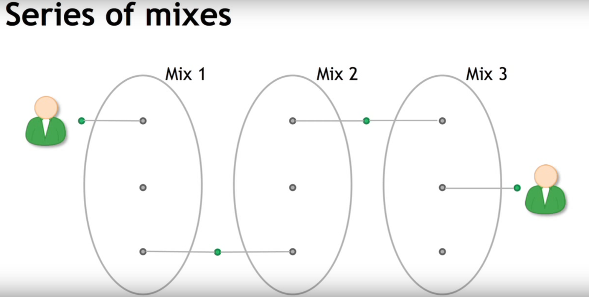
Anonymity and decentralization are in conflict
- Interactive protocols with banks are hard to decentralize
- Decentralization is often achieved via public traceability to enforce security
Mixing
- Online wallets, really same as traditional banking service they know all about your transactions
- Network interaction to link with IP, use TOR like software to prevent IP tracing
- Mix services
- Principle of mixing services:
- Use s series of mixes
- Mixcoin: Anonymity for bitcoin with accountable mixes
- Destroy its records once the mix is done
- Uniform transaction, same chunk size, to reduce traceability
- Client side software must be automated, and linked in with desktop wallet
- Charging a percent does not work, can be deduced
- Mix should charge an all or nothing fee, with a fixed probability all will be taken
- Mixes should implement a standard API to make this easy
- Ref: J Bonneau et al, Financial Cryptography 2014
Remaining problem: trusting mixes
- Stay in business, build a reputation
- Users can test for themselves
- Cryptographic warranties
Currently thare are no reputable dedicated mix
Bitcoin wiki warns of this as suggest buyer beware - caveat emptor
Many people have proposed - decentralized mixing
- No bootstrapping problem - Community of peers who want to do mixing - no central coordination necessary
- Theft impossible - nobody is sending bitcoins to specific users
- Possibly better anonymity
- More philosophically aligned with Bitcoin
Coinjoin - proposed by Greg Maxwell (BitCoin core developer)
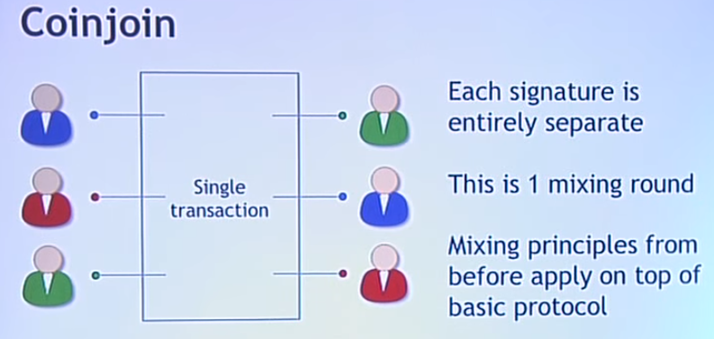
- Group of user place their coins into a pool
|
- Do a sequence of coin join
|
- transaction sizes are standardized
|
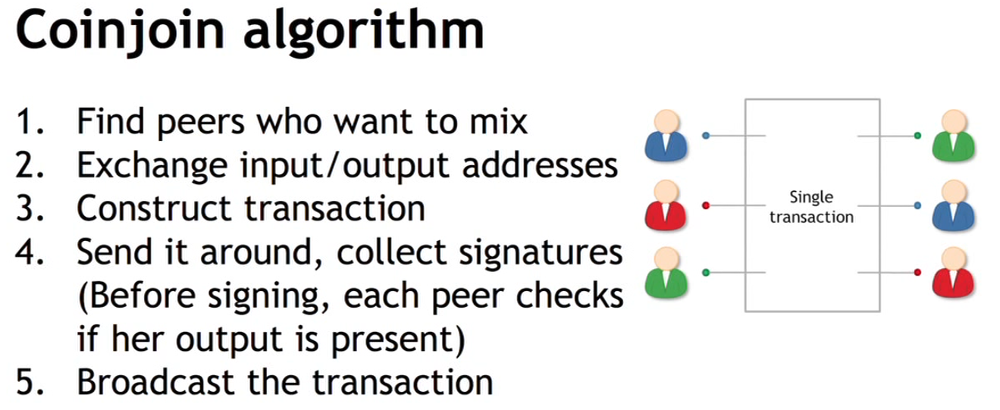
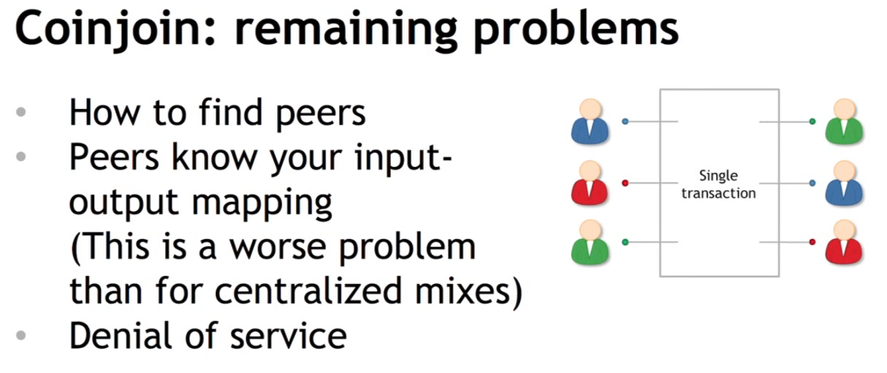
Alternative to BitCoin
The problem: Bitcoin is not private
The Bitcoin payment network offers a highly decentralized mechanism for creating and transferring electronic cash around the world. Unfortunately, Bitcoin suffers from a major limitation: since transactions are stored in a public ledger (called the “block chain”) it may be possible to trace the history of any given payment — even years after the fact. Worse, since the Bitcoin ledger is public, any party can recover this information and data mine to identify users and patterns in the transactions. In other words: Bitcoin transactions are conducted in public.
Zerocoin: protocol level mixing |
Mixing capability baked into protocol | Zerocoin: Anonymous distributed E-Cash from Bitcoin |
Advantage: cryptographic guarantee of mixing |
|
Disadvantage: not currently compatible with Bitcoin |
|
5 Levels of anonymity
System | Type | Anonymity attacks | Deployability |
Bitcoin | Pseudonymous | Tx graph analysis | Default |
Single mix | Mix | Tx graph analysis, bad mix | Usable today |
Mix chain | Mix | Side channels, bad mixes/peers | Bitcoin compatible |
Zerocoin | Cryptographic mix | Side channels (possible) | Altcoin |
Zero cash | Untraceable | None (known) | Altcoin, tricky setup |
How Transactions work
- Transaction refers to prev trnsaction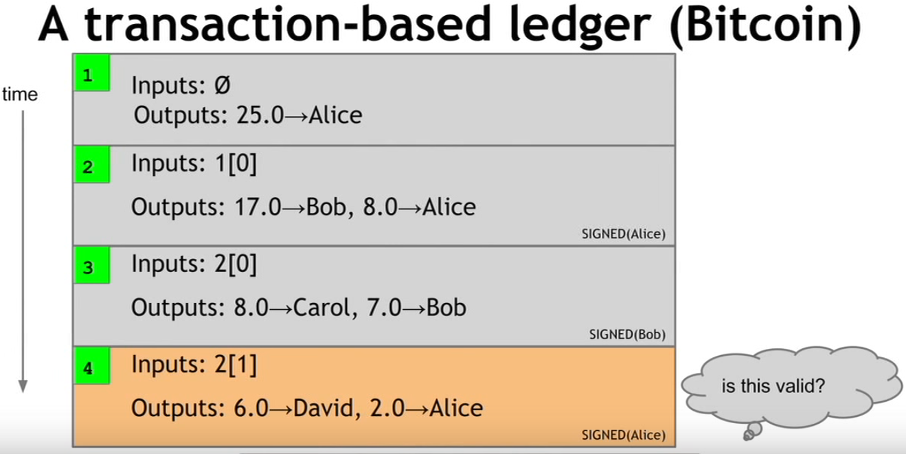
- Must use up all the coins
- Give some to another party, rest back to yourself (change address)
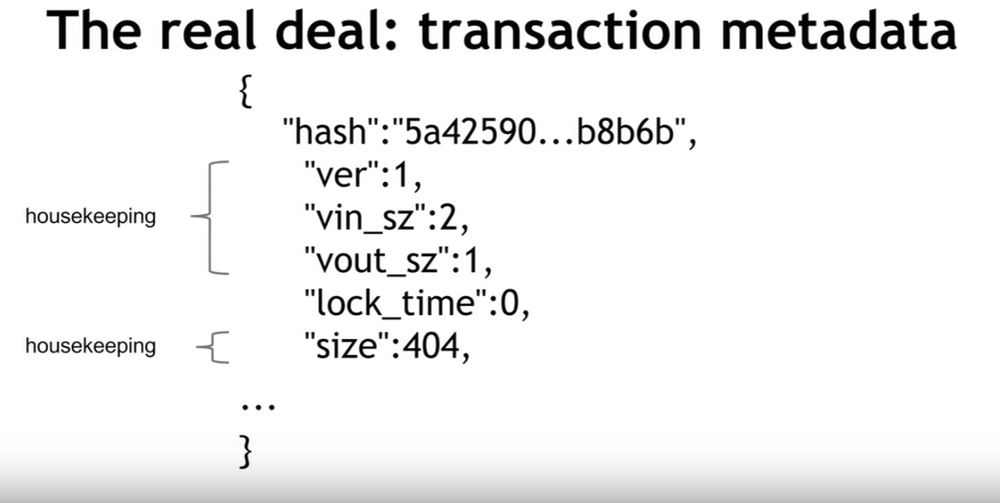
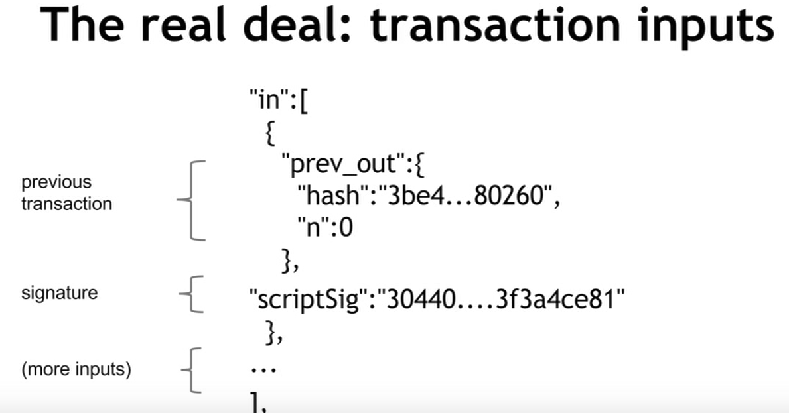
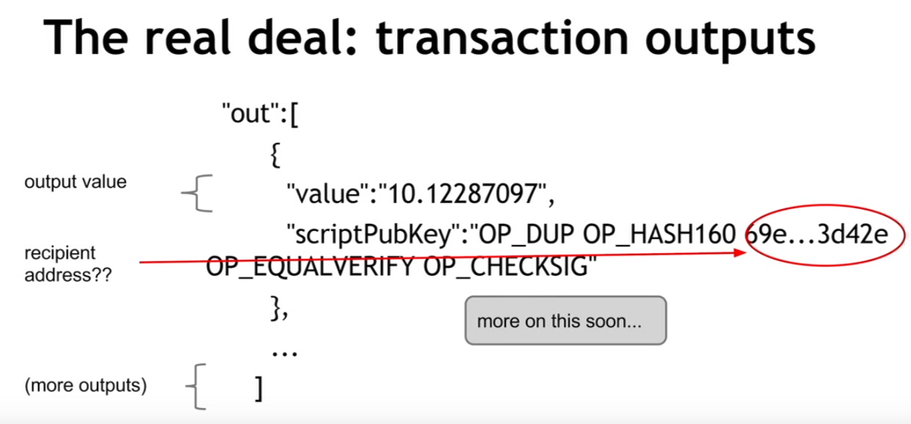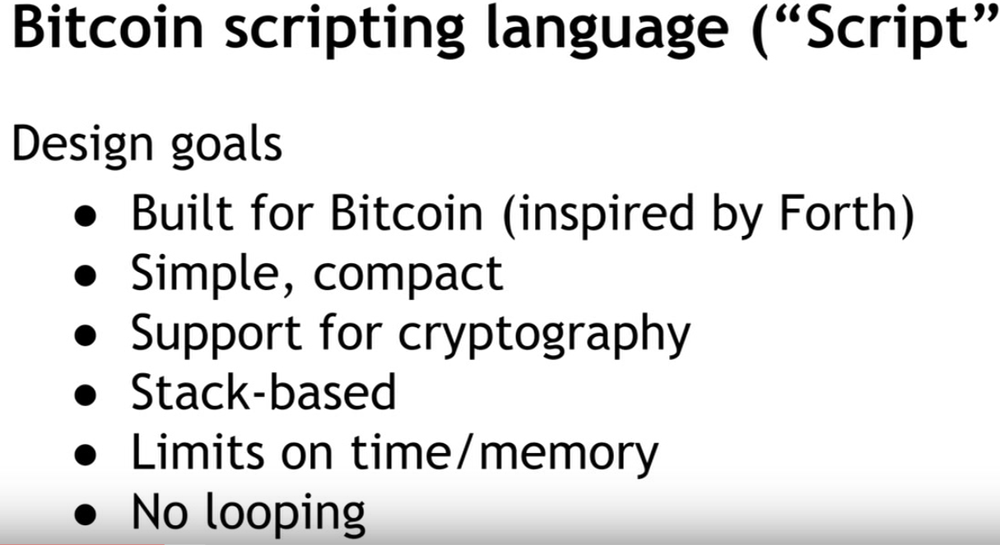
Creates a new BitCoin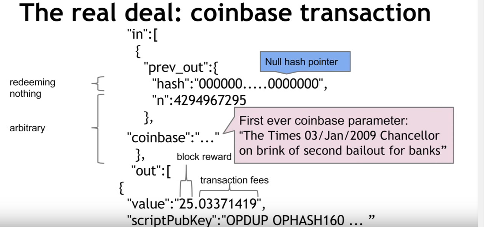
See: blockchain.info
Bitcoin P2P network
The nodes in the Bitcoin P2P network are responsible for managing the data required by Bitcoin, namely:
- All or some of the blockchain (sufficient to validate proposed transactions) and proposed new blocks of the blockchain
- All proposed transaction
- The address (IP) of their neighbors
The node have the following properties
- Ad-hoc network of nodes with random topology - determined by who joins and when they join
- There is an ad-hoc protocol for P2P communication (runs on port 8333)
- All nodes are equal
- New nodes can join at any time
- Nodes can choose to validate using the entire blockchain or only a part of it
- Nodes relay proposed transaction and blocks in the blockchain to their neighbors (a small subset of the network).
- Flood routing is used to get data to other nodes
- Nodes may choose to act as miners (or not)
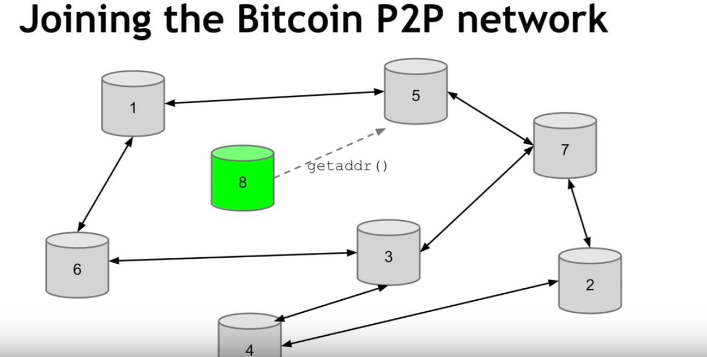
Joining Bitcoin network
Join a seed node. Broadcast transaction, flood protocol
Should a node relay a proposed transaction?
- Transaction valid with respect to current block chain
- (Default) script matches a whitelist
- Have not seen the transaction previously
- Does not conflict with other transactions relayed to others previously
Should a node relay a proposed block?
- Almost identical to transaction relay
- Block must meet the proof of work requirement (hash target)
- All transactions in the block are valid
- Run all scripts even if node decides not to relay
- Block builds on the current longest chain (allow for a little leeway just in case)
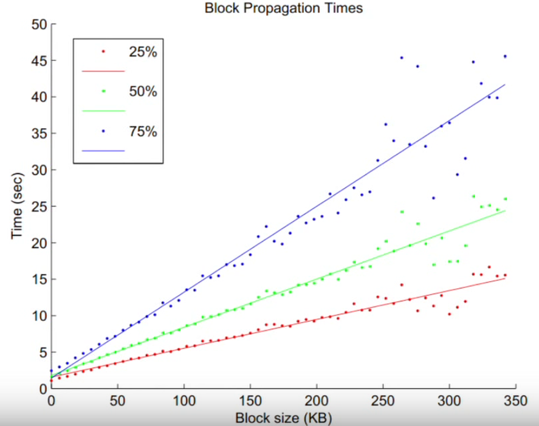
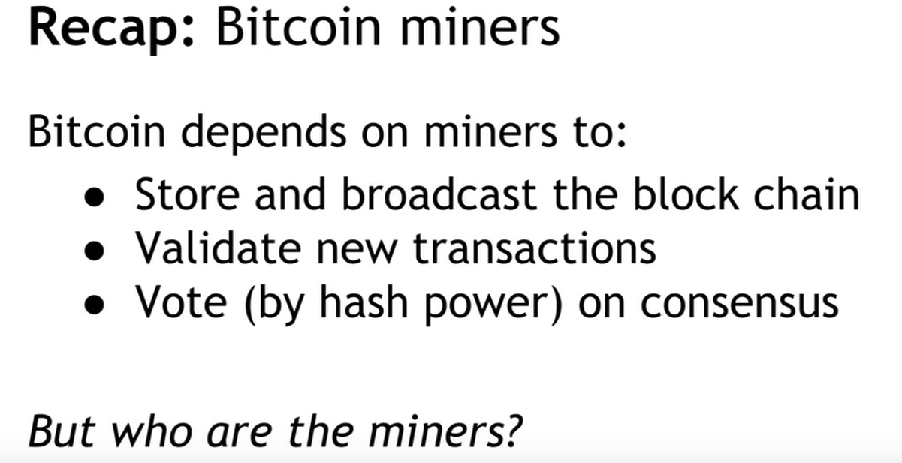
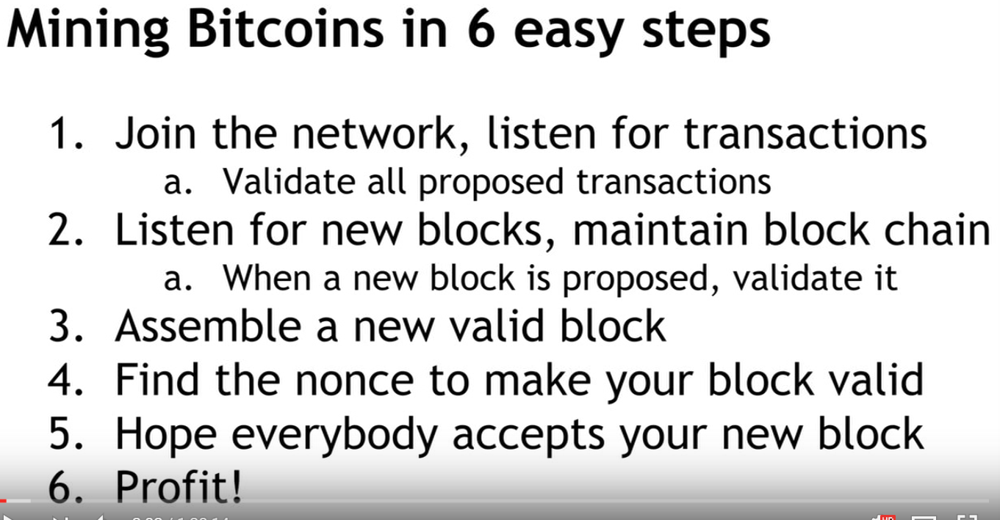
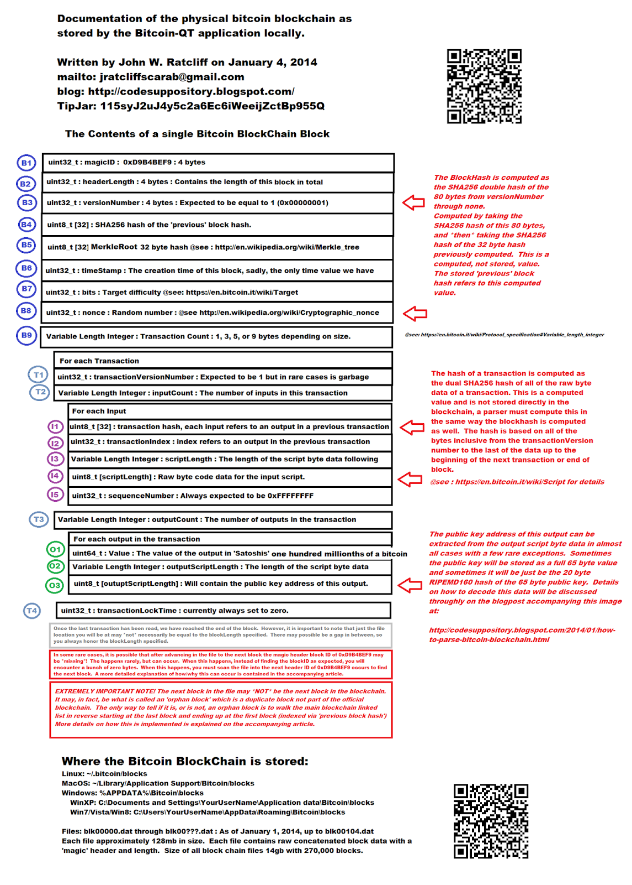
Mining Strategies
Feather forking, announce that you will not include transactions from party X, and hope that other join you, because if you hold a id the capacity there is a probability a2 probability that you fork will be the winner, if you fork does not hold, you go back to the main fork. The incentive for others to join you is because there is a risk of a2 probability that the regular branch will not end up to be the main branch. Why would a miner do this, for example legal reason to freeze an account. The other reason is to enforce a min transaction fee.
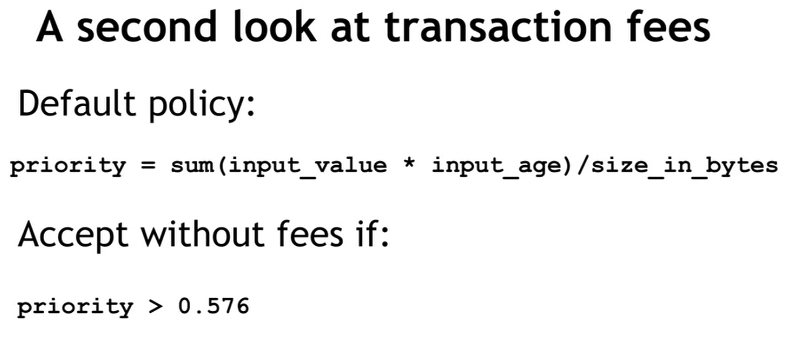
All Bitcoin rules are enforced by miners.
Mining pools
- Steadier prop of payment
- Proof of progress, supply near hits as you progress
- Pool manager, pays work progress shown as a percent of all work progress shown by all pool members
- API for pool management available
- Mining hardware, ASCI (custom silicon has engines)
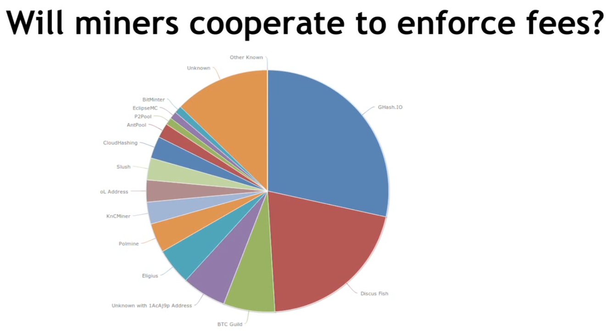
Bitcoin as a platform
We have built bitcoin, what can we build on top of it:
- Commitments
- Token tracking
- Multi-party lotteries
- Public randomness
- Prediction market
Secure timestamping
- Secure timestamping, goal: Prove knowledge of X at time t, if desired, without revealing x at time t. Evidence should be permanent.
- Use H(x) into blockchain, if later we provide X we can prove that we knew x at the time of recording. Using proof of burn, OP_RETURN <arb data>
- Overlay currency, timestamping is all you need
- Write all data into BTC blockchain, no new mining consensus required
- Invalid TX can now be added
- Need new rules - first valid tx wins
Bitcoin exchanges
Bitcoin in circulation through the years
15,285,225 Bitcoin as of March, 2016
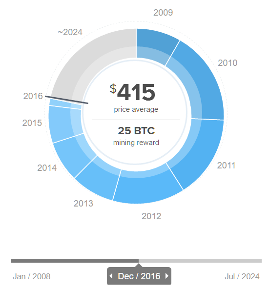
Bitcoin are produced through a process called "mining". There is an upper limit of 21 million bitcoin that will ever be mined. The number of coins that are mined in each block is called the "reward". This reward decreases as time passes.
The last 7% of bitcoin will be mined over a timespan of 100 years. Those years are not included in this chart.
The price before July 2010 is unknown because there were no markets.
Real exchanges, like MtGox or Bitstamp, are is a marketplace for traders. The trade is performed by traders (buyer or seller) setting limit orders to buy / sell bitcoins for a certain price. The exchange will match buyers and sellers when conditions of both the buyer and the seller are met.
There are two types of orders: limit orders and market orders. A limit orders allows a trader to place an offer to buy bitcoins at a price lower than the current trading price, or sell bitcoins higher than the trading current price. However, these orders will only be executed when another trader accepts them. Market orders will just find the best matching limit order.
The other type is a market order, when a trader places a buying market order, the exchange will look for the best sale price offered and buy from that trader. If the buyer wants to buy more than just one bitcoin, he will continually take the lowest price available. Doing this, the "price" of bitcoin will increase as the lower-price sell orders are no longer available.
Coinbase is more like a store for bitcoin, There is a set price for the bitcoin and it can be purchased immediately.